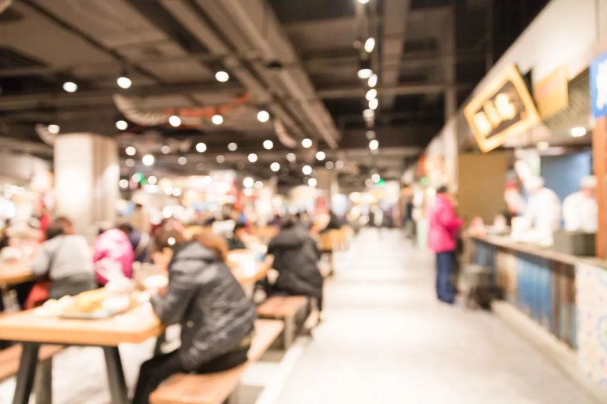

自掏百万给员工发工资，熬过去希望是春天
原文链接 备份链接 一场疫情，把不少企业的节奏打乱，旅游业首当其冲。 两三天从高峰跌到低谷，不少企业主称无法作出反应。有民宿老板为春节多买一个冰柜，购置大量鸡鸭、鲜奶；有企业从早到晚开会，讨论春节高峰的应对……这些忙碌的横切面都矗立在1 …
原本打算在春节期间大有作为的餐饮业，被疫情来了一次“精确打击”。在现金流高度紧张的情况下，很多停摆企业仅能维持2-3个月。在一些从业者看来，真正的挑战在复工之后，疫情可能会带来餐饮业的一次洗牌。
记者 | 黄子懿 黑麦
被叫停的百米赛跑
突然之间，日子变得不忙碌了，何勇觉得非常不习惯。自疫情爆发以来，他多数时间都待在自己在上海的家中，偶尔开着车在上海的街道上转悠。看着街边商铺落下的门帘、冷清的商场。他叹了口气，说：“感觉好像整个城市被冰冻了。”
被冰冻的还有他的生意。何勇是连锁品牌阿香米线的创始人，旗下管理着遍布全国的700多家直营店，拥有10000多员工。疫情以来，商铺全线歇业，原本他的工作是每天布置各地区经理经营好春节期间的业务。而现在，他的主要工作之一成了每天在线上开会，上午、下午各一次，在手机系统上查看员工们报上来的体温统计表，看看有没有员工发热等异常情况。
“这简直是一次精确打击。”何勇说，原本每年春节是营业的高峰期，为此他们备好了约1.3亿元的食材准备冲刺，但这时候，疫情按下了刹车，餐饮、院线、旅游，直接从春节最赚钱变成了最亏钱。**“就像一个百米赛跑，你鼓足了马力，脚正准备往前蹬的时候，忽然有一个哨声叫你停下。”
**

远征 摄
阿香米线的700多家店中，武汉有25家，湖北省一共近50家，与武汉封城几乎同一时间关闭。最早武汉封城时，何勇还并不觉得严重，认为除开湖北之外的店面，其他店面每天也能带来500-600万的营业额，但随着疫情蔓延，他遍布全国26个省份147个县市的店铺都骤然全部关闭，这被他称之为“断崖式的硬着陆”。
位于上海总部的信息化管理系统，将这几天惨谈的营业额赤裸裸地实时展现在他面前：大年初一，80万；初二，40万；大年初三，20万……“到后面我都懒得看了。”2月3日接受采访这天，何勇无奈地说，当天营业额还不到9万，“只剩一些机场的店面还开着。”
与阿香米线的快餐不同，地处广州的另一家餐厅榕记主打中餐，在广东范围内拥有店面40多家，其中位于城区的有10-20家。其负责人王国辉说，每年春节期间，城区的店面都会有很多当地人来订年夜饭、团体席宴等。“后来全退光了。”他们准备了近200万的食材现在都放在冷库里，其中一些被扔掉、卖掉。**“损失多少还无法估计，现在还没统计出来，因为不是一个店。”
**

远征 摄
疫情对于春节期间餐饮业的影响有多严重？1月31日，恒大研究院在《疫情对中国经济的影响分析与政策建议》中指出，本次疫情在经济层面的影响表现为宏观层面的需求和生产骤降。其中受影响最大的就是餐饮、旅游、电影等第三产业服务消费行业。2019年春节七天假期内，中国零售和餐饮业销售额约1万亿元人民币。据报告估算，餐饮业与零售业仅在春节7天内的损失就可能高达5000亿元。
具体到商家上，何勇初步估计仅春节7天损失就在4500万左右。其他知名的连锁品牌更严重。不完全统计显示，从1月21日-30 日，眉州东坡一共退餐11100余桌，估算直接损失在1700万左右，若加上支付的食材、房租、工资等成本，损失难以估量；海底捞歇业损失约在7亿元；西贝莜面村的负责人在接受媒体采访时说，预计春节前后一个月将损失营收7至8亿元。
王国辉说，在餐饮界内有个226定律，即60%的餐饮业是亏钱的，20%收支平衡，剩下的20%盈利。从时间上看，很多餐饮店也分淡旺季，比如他的店铺一年约8个月是淡季，旺季主要集中在冬天里的4个月，“只有靠这4个月冲业绩啊”。
结构性变化
并非每一家餐饮商家都会着重发力春节。春节餐饮业的重点在中餐与快餐等，一些小型店面本来就处于打烊状态。春节对于一些非主流的餐饮商家来讲，本身也并非旺季。
四川成都的豪虾传就是这样一家店面，在春节乃至疫情之前就早早关了门。其创始人蒋毅说，养虾有季节性，每年10月后小龙虾进入繁殖期，肉质变差，冬天更要冬眠，直到4-5月份才能上市。“对我们的影响暂时还有限。”蒋毅说，他度过寒冬的方式之一，是将员工派遣到其他餐饮店铺工作。2月3日晚，盒马生鲜也称，歇业的云海肴、青年餐厅（北京）员工将赴盒马“上班”。

但总体来说，这轮疫情正衍生出一个全局性的寒冬，有小型的餐饮商家已准备歇业退出。1月30日早上，蒋毅接到了朋友老姜的一个电话，对方沮丧地说，“今天发完工资，就打算退出餐饮了。”朋友说，自己身上已经没有现金了，到下个月就拿不出钱来缴房租和发工资了。“我坚持不下去了。”
“餐饮行业最大的魅力是什么？就是现金流。”蒋毅说，这是其他很多行业的从业者转行做餐饮的重要原因，甚至是首要原因。现结现卖、实付实销的交易模式，让餐饮企业通常拥有丰厚的现金流，这样才能承受日益增长的人力与土地成本。
这一切的前提都是正常营业，一旦闭店歇业，现金流也就断裂了。而疫情当前，餐饮行业要在没有进账的情况下，支付着房租与工资，在高度紧张的现金流下摇摇欲坠。很多企业可能只能维持2-3个月，这是行业多家大品牌的共识。西贝莜面村表示，账上工资只够发3个月工资；外婆家负责人则在接受采访时表示，每天天亮一醒来，“就要支付250万元工资”，目前看只能苦撑2个月。
何勇给我算一笔账，目前阿香米线每月要付约3000万的租金，3500多万的工资，这些都是硬性支出，占到了日常成本的50%以上。他说，如果当前情况持续下去，他可能最多只能维持3个月左右。“创业以来，从来没遇到过这么大的困难。”何勇说。

图 | 摄图网
何勇在餐饮业已有20年。2000年，他从一个电器公司销售人员转行进入餐饮行业，从山东淄博起步，最初是做拉面，后来做米线。靠着对行业的判断力与餐饮业丰富的现金流，他在没有贷款的情况下，20年来一路开到了700多家门店，先后将总部搬到了青岛、上海，在米线单品类做到行业前茅。“快餐行业的现金流更好，因为都是现卖，不会有月结这些。”
在何勇的记忆中，2003年“非典”对餐饮业的打击也没有这么大。当时他在淄博开的三家店都是正常营业，疫情的辐射也并非在春节期间。这几天，他跟老同事在群里聊天，问他们：“非典期间你们有感觉吗？”对方都说没啥感觉。
“那时候各项成本也都很低。”王国辉也经历了非典。他说2003年的时候在广州，餐馆里雇一个工人工资不到500元/月，房租不过1元/平米/月，一家1000平米的餐馆店铺一月租金不过上千元。“现在人工成本和房租都涨了大概十倍。”王国辉说，2003年时餐馆毛利润率约为40%，现在是50%，但实际上各项成本增长稀释利润，竞争也变得比过去激烈。**“除了现金流之外，餐饮业还有一个特点就是低门槛。”
**

图 | 摄图网
与2003年相比，中国经济也有了结构性变化。第三产业比重已从当时的42%上升到53.9%，成为国民经济支柱性产业。当前，中国餐饮企业超过460万个，门店数量更是超过800万个，创造了超过3000万个就业岗位，以个体、私营和三资企业为代表的非国有经济的比例已占95%以上，成为行业主体。
“2003年那时候媒体的传播速度、人员流动的速度都没有这么快、这么广。”何勇说他感到，现在的时间和空间都被如此地缩小，以至于一场疫情能有如此深远的影响。
黎明前的黑暗？
1月末，春节原定的假期已过，返程人流开始增加。在北京开着4家餐馆、1家烘培店的李羊不时接到员工来问询具体开工时间。他一度为此纠结。
此时，三里屯陆续有店铺开门营业，但仍有6、7成左右的店关着门，客人寥寥无几。白天只有咖啡馆能聚集些人，饭点时餐厅的上座率只有平时的一两成。纠结之下，李羊决定，让自己在三里屯的两家餐厅先开业，准备了200万“过冬”。“这几天开业可能会创造历史最低营业额，一天几百块的收入，开也是赔，不开也赔”。
这也是很多商家面临的一道难题。多位老板表示，特殊时期的租金减免要跟房东、商场接洽，很多员工也表示，疫情期间的工资可以协商，甚至有员工表示可以减薪甚至免薪，算作休假。“但我们肯定不能这么做，有风险在里面。”牛蛙餐饮连锁品牌“蛙来哒”负责人罗清说。

图 | 摄图网
一些店面在商业综合体内的企业，已经启动跟商场洽谈。何勇说，他在万达商场里有170多家店，万达提出了可以减免36天的租金与物业管理费，他对此心存感激。然而，万达的善意似乎也是杯水车薪。真正困扰这些商家的问题是：复工之后，店铺是继续开业还是不开？
因为复工开业，就意味着房租、工资可能要照付。王国辉直言，在租金减免的情况下，他们的现有资金储备能维持两月左右。“这是在停业状态才能支持下去的，如果开业了，我们是维持不下去的，因为人们不一定会来消费。”何勇也认为，疫情迟早是会过去，但关键是消费者的信心什么时候能回来。
长期看来，很多餐饮商家老板依然看好餐饮业的未来，这是基于中国每年在增长的5万亿元餐饮消费的需求量级，也是认定在疫情过去后，餐饮等第三产业会有报复性反弹的判断。“餐饮的消费需求还是在涨的。”罗清说。

图 | 摄图网
然而，摆在他们眼前的现实问题是，如何度过眼下这“黎明前的黑暗”？“行业内大家最近也在讨论，估计疫情完全平复下去，大家的意识上觉得说安全了，至少会要到3月底了；然后再等到消费者心理安全感的恢复，可能就到5月底，到6月我们才有可能恢复一个基础的平常收入。”罗清说，同行们都认为，从2月起至少有4个月，是基本没有太多收益的。
在蒋毅看来，这其中最难熬过的就是2月，他将其称之为“二月危机”。“因为二月如果都撑不过去，那就不用考虑后面3~6个月的萎靡周期了。”蒋毅的那位朋友，就是难以判断自己何时能开业，做出了关店的决定。当时，他的冻库里还有接近100万的货无法变现。更重要的是，下月还要缴纳两个店、超过超过70万租金，有超过120万的资金缺口。于是选择发掉一个月工资，闭店走人。
“我们现在只有因势而变。”何勇说，在一些已经开始慢慢复工的地区，他打算随着复工节奏慢慢地开一店，酌情增补人员，为最少3个月、可能6个月的过渡期做准备，对于未来走势，他说自己暂时也不清楚。

图 | 摄图网
“比如原来一家店10多个人，我先用3-4人试试，因为顾客肯定不会太多。”何勇说，他会看看能否熬得这几个月，“起码要收支平衡”，如果不行将会把一些现金流为负的店面“清疮”。“我们正处于一个巨大的历史过程中，谁也看不清。我们只是践行者，不是预言家。”何勇说。
这种情况下，很多老板开始抱团取暖，参加线上的培训会等，学习如何节省现金流等知识。这也是蒋毅的目前的主要工作之一，他会利用业余时间给其他老板上课、做培训。“餐饮行业有自己的问题，就是一些企业的不规范，有财务上的漏洞，所以金融行业很少碰餐饮。”蒋毅说，这轮危机对于行业可能也是一次洗牌的机会，一些不规范的餐厅早点被关是好事，“能让真正的好餐厅留下来。”
作者档案

**黄子懿
**
做好打持久战的准备
26分钟前


三联生活周刊
个人微博：@杰货

⊙文章版权归《三联生活周刊》所有，欢迎转发到朋友圈，转载开白请联系后台。未经同意，严禁转载至网站、APP等。
黄子懿
微信扫一扫赞赏作者 赞赏
长按二维码向我转账
受苹果公司新规定影响，微信 iOS 版的赞赏功能被关闭，可通过二维码转账支持公众号。
文章已于修改
原文链接 备份链接 一场疫情，把不少企业的节奏打乱，旅游业首当其冲。 两三天从高峰跌到低谷，不少企业主称无法作出反应。有民宿老板为春节多买一个冰柜，购置大量鸡鸭、鲜奶；有企业从早到晚开会，讨论春节高峰的应对……这些忙碌的横切面都矗立在1 …
原文链接 备份链接 相比其它行业，餐饮业是最早遭受疫情冲击的行业之一。这个春节，餐饮人正在遭受极大的心智和经营能力的考验 图/法新 文｜《财经》记者 杨立赟 编辑｜余乐 一个月前，应乾坤决定留在杭州过年的时候，没想过如今的自己会进退两难。 …
原文链接 备份链接 疫情刚开始的时候，我们还没想到形势会发展成后来那样，那时我们只是对湖北籍的朋友致以了常规关心，回去了吗？家里没事吧？注意安全。年后见。 但日子翻得一天比一天艰难。中国的中心省份被完全封锁，千家万户亲朋挚友隔绝禁足，身在 …
原文链接 备份链接 尽管防疫成本暂时可控，销售收入降低使不少企业依然面临现金流短缺的风险。短期内公司将如何应对？ _ 实习生 | 丁宁 记者 | 王晓珊 编辑 | 盛倩玉 沈小山 版式 | 韩佳芸 这个年，石青是在接连不断的电话会议中度 …
原文链接 备份链接 文 | 王丹妮 编辑 | 林鹏 话筒从车上一直跟到了钟南山的会议现场，镜头摇摇晃晃，他一路上都在讲话。这是2月3日央视对疫情最新进展的采访，工作人员拦了几次，最终都没能把记者拦下。 这个春节，民众想从这位84岁院士口中 …